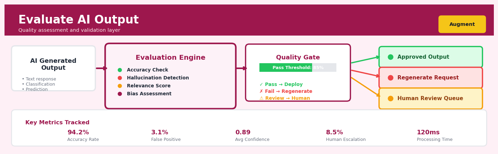

Evaluate AI Output#


The biggest mistake teams make is treating evaluation as a post-deployment afterthought rather than building it directly into the AI pipeline with automated quality gates. I always set up a dual-threshold system where outputs scoring between 70-85% get routed to human review instead of auto-rejection, which catches edge cases that pure automation would miss while maintaining velocity. Remember that your evaluation metrics should evolve with your model because what constitutes a good output changes as user expectations and use cases mature.
The 60-Second Version#
What it does: Evaluate AI Output measures whether text generated by AI models meets your quality standards before it reaches customers or decision-makers.
When to use it: Use this when you’re deploying AI-generated content—chatbot responses, product descriptions, report summaries, or recommendations—and need to ensure accuracy, consistency, and appropriateness at scale.
What you get back: A quality score or pass/fail verdict for each AI-generated output, enabling you to automatically approve high-quality content, flag questionable outputs for human review, or reject unreliable responses entirely.
Difficulty |
Moderate |
Typical runtime |
Seconds to minutes per batch of outputs |
What you bring |
AI-generated text and quality criteria (reference answers, factual sources, or evaluation rubrics) |
What you get |
Quality scores, consistency metrics, and actionable flags for review |
Heuristix bucket |
Augment — AI & Language Intelligence |
AI systems produce output at scale, but scale without quality control creates risk at scale—you must evaluate systematically before deploying widely.
Learning Objectives#
After reading this chapter, a business user will be able to:
Identify critical decision points where AI-generated content requires evaluation before deployment, such as customer-facing communications, regulatory documentation, or knowledge base articles.
Interpret evaluation scores across dimensions like factual accuracy, brand alignment, and tone consistency to determine whether AI output meets quality thresholds for specific use cases.
Decide whether to approve, edit, regenerate, or escalate AI-generated content based on evaluation results and documented quality standards for your organization.
After reading this chapter, a data scientist will be able to:
Implement multi-dimensional evaluation frameworks combining automated metrics (ROUGE, BERTScore, factual consistency checks) with human evaluation protocols appropriate to your content type and risk profile.
Calibrate evaluation thresholds and select appropriate metrics based on the trade-offs between evaluation cost, processing speed, and detection sensitivity for different quality dimensions.
Diagnose evaluation failures such as metric-target misalignment, domain drift in reference standards, and inter-rater disagreement, then apply corrective strategies to improve assessment reliability.
Overview#
Evaluate AI Output is a systematic methodology for assessing the quality, reliability, and fitness-for-purpose of text generated by large language models (LLMs) and other generative AI systems. It belongs to the family of AI quality assurance and validation methods, combining quantitative metrics from natural language processing with structured human evaluation frameworks. The technique encompasses both automated scoring mechanisms—such as semantic similarity, factual consistency, and coherence measures—and structured rubric-based assessment protocols that enable organisations to maintain quality control over AI-generated content at scale.
When to Use This#
Use this when:
Deploying AI-generated content in customer-facing applications — Before publishing chatbot responses, automated email replies, or AI-written marketing copy, you must verify that outputs meet quality thresholds and brand standards.
Building retrieval-augmented generation (RAG) systems — When your LLM synthesises answers from retrieved documents, you need to verify that responses are grounded in source material and do not hallucinate facts.
Comparing multiple LLM providers or prompt strategies — When evaluating whether Claude, GPT-4, or Gemini performs better for your specific use case, or when A/B testing different prompt formulations.
Establishing quality baselines for AI automation — Before replacing human workers with AI systems, you need rigorous evidence that AI output quality meets or exceeds human performance.
Monitoring AI systems in production — Detecting model drift, quality degradation, or unexpected failure modes in deployed AI systems requires continuous evaluation pipelines.
Regulatory compliance and audit trails — In regulated industries, you may need documented evidence that AI outputs have been validated against defined quality criteria.
Training and fine-tuning feedback loops — Generating labelled evaluation data that can be used to improve prompts, fine-tune models, or build reward models for RLHF.
Do NOT use this when:
The task has a single correct answer — For deterministic tasks like arithmetic or database lookups, use exact-match validation rather than evaluation frameworks designed for open-ended generation.
Human judgment is fundamentally required — For high-stakes decisions in medicine, law, or safety-critical systems, evaluation should inform but not replace expert human review.
You lack clear evaluation criteria — If you cannot articulate what “good” looks like for your use case, begin with criteria development before attempting systematic evaluation.
Questions This Answers#
Quality Control & Risk Management#
Is the AI giving us accurate information, or are we at risk of publishing hallucinations to our customers?
How do we know if the chatbot responses are actually helpful, or are we frustrating users with irrelevant answers?
Which of our AI-generated product descriptions contain factual errors that could lead to customer complaints or returns?
Can we trust this AI to draft customer communications without every single message needing manual review?
Are we legally exposed if the AI generates biased or inappropriate content in our customer service responses?
Performance Optimization & Resource Allocation#
Should we invest $200K in the premium AI model, or is the cheaper version good enough for our support tickets?
Which AI vendor delivers the most accurate summaries for our quarterly earnings calls—Google, OpenAI, or Anthropic?
Is it worth paying our content team to edit every AI-generated blog post, or can we publish 80% of them as-is?
How much time are we actually saving with AI-generated reports versus our analysts writing them from scratch?
If we automate our proposal writing with AI, how many proposals can we review before cost savings turn into quality problems?
Operational Decision-Making#
When the AI generates five different versions of our marketing email, which one should we actually send to 50,000 subscribers?
Should we replace our current AI system mid-contract, or wait until renewal given the performance gaps we’re seeing?
Which types of customer inquiries can we fully automate with AI versus which ones still need human escalation?
How do we set the quality threshold—do we reject AI outputs that score below 70%, 80%, or 90% on our rubric?
How It Works#
Imagine you’re a restaurant critic who needs to review fifty new dishes every week. You can’t just say “good” or “bad”—you have a detailed scorecard covering presentation, taste, temperature, portion size, and whether the dish matches its menu description. Some criteria you score yourself by tasting, while others you measure objectively (is the soup actually hot? does the “grilled salmon” contain salmon?). For high-stakes reviews, you might have a second critic taste the same dish. Evaluating AI output works exactly this way: instead of tasting food, you’re systematically scoring generated text against multiple quality dimensions using both automated checks and human judgment.
AI GENERATES TEXT
↓
┌──────────────────────────────────────────┐
│ "The Eiffel Tower was built in 1889 │
│ in Paris and stands 324 meters tall." │
└──────────────────────────────────────────┘
↓
EVALUATION FRAMEWORK
↓
┌─────────────────┬──────────────────┬────────────────┐
│ AUTOMATED │ HUMAN │ HYBRID │
│ METRICS │ ASSESSMENT │ CHECKS │
├─────────────────┼──────────────────┼────────────────┤
│ Factual? │ Tone appropriate?│ Hallucination │
│ ✓ 1889 correct │ ✓ Professional │ detection: │
│ ✓ 324m correct │ ✓ Clear language │ Cross-ref with │
│ │ ✗ Too brief │ trusted source │
│ Coherent? │ Useful? │ → All facts │
│ ✓ Logical flow │ ✓ Answers query │ verified │
│ ✓ Complete sent.│ Score: 8/10 │ │
└─────────────────┴──────────────────┴────────────────┘
↓
FINAL SCORECARD
┌──────────────────────────────┐
│ Overall: 85/100 │
│ Safe to publish: YES │
│ Flagged issues: Brevity │
└──────────────────────────────┘
Step 1: Define your quality criteria upfront. Before evaluating anything, you establish what “good” means for your specific use case. A customer service chatbot needs politeness and accuracy. A creative writing assistant needs originality and engagement. You create a scorecard listing 5-10 specific dimensions like factual accuracy, relevance, coherence, tone, and completeness.
Step 2: Run automated checks on measurable qualities. Software scans the AI-generated text for things machines can reliably measure. It checks factual claims against databases, measures readability scores, detects toxic language, verifies the response actually addresses the prompt, and compares outputs to reference answers using semantic similarity algorithms that check if meanings match even when wording differs.
Step 3: Apply human judgment to subjective qualities. Trained evaluators score dimensions that require human understanding—does this explanation make sense? Is the tone appropriate for a professional email? Would this joke land with the target audience? Evaluators use standardized rubrics so “creativity scored 4 out of 5” means the same thing regardless of who’s scoring.
Step 4: Cross-reference claims against trusted sources. For high-stakes content, you verify factual statements by checking them against authoritative databases or knowledge bases. If the AI claims “Mount Everest is 8,849 meters tall,” you automatically query a geography database to confirm. Mismatches get flagged as potential hallucinations.
Step 5: Aggregate scores into an overall quality rating. Combine all metrics—automated and human—into a final score, often with different weights for different criteria. Critical applications might fail any output with factual errors regardless of how well-written it is. Lower-stakes uses might accept minor imperfections if the overall utility is high.
Step 6: Make a publish decision based on thresholds. Compare the final score against your predetermined quality bar. Content scoring above 80 might auto-publish, 60-80 goes to human review, and below 60 gets rejected for regeneration with improved prompts.
The key insight: Systematic evaluation transforms AI output from a black box gamble into a quality-controlled process by combining what machines measure well (facts, patterns, consistency) with what humans judge well (nuance, appropriateness, usefulness).
The Intuition#
Consider how a newspaper editor evaluates an article submitted by a journalist. The editor does not simply check whether the article contains words—they assess multiple quality dimensions simultaneously. Is the article factually accurate? Does it answer the question the reader came to understand? Is the writing clear and appropriate for the publication’s audience? Does it stay on topic, or does it ramble into irrelevant territory? The editor brings both objective standards (fact-checking against sources) and subjective judgment (assessing tone and readability) to bear on a single piece of writing.
Evaluating AI output follows precisely this editorial model, but systematised for scale and consistency. We decompose “quality” into measurable dimensions—faithfulness to source material, relevance to the user’s query, coherence of argumentation, fluency of language, and safety from harmful content. Each dimension can be assessed through different mechanisms: some through automated metrics that compare text mathematically, others through structured rubrics applied by human evaluators or by LLMs acting as judges. The key insight is that no single metric captures “quality” holistically; evaluation requires a multidimensional framework tailored to your specific use case.
The mathematical foundations draw from information retrieval, computational linguistics, and psychometrics. When we measure semantic similarity between an AI response and a reference answer, we are projecting text into high-dimensional embedding spaces where geometric distance corresponds to meaning difference. When we assess factual consistency, we decompose claims into atomic propositions and verify each against source documents. When we use LLM-as-judge approaches, we are essentially building a probabilistic scoring function where the judge model estimates the distribution over quality ratings conditional on the input-output pair. These mathematical structures provide rigour and reproducibility to what would otherwise be purely subjective assessment.
The Mathematics#
Problem Setup and Notation#
Let \(\mathcal{Q}\) denote the space of queries (user inputs, prompts, or instructions), \(\mathcal{C}\) the space of contexts (retrieved documents, conversation history, or system prompts), and \(\mathcal{R}\) the space of responses (AI-generated text). An AI system \(f: \mathcal{Q} \times \mathcal{C} \rightarrow \mathcal{R}\) maps a query-context pair to a response.
For a given evaluation instance, we observe:
Query \(q \in \mathcal{Q}\)
Context \(c \in \mathcal{C}\) (possibly empty)
Generated response \(r = f(q, c)\)
Reference response \(r^* \in \mathcal{R}\) (when available)
Our goal is to compute an evaluation score \(s: \mathcal{Q} \times \mathcal{C} \times \mathcal{R} \times \mathcal{R} \rightarrow [0, 1]\) (or \(\mathbb{R}\) for unbounded metrics).
Embedding-Based Semantic Similarity#
Let \(\phi: \mathcal{R} \rightarrow \mathbb{R}^d\) be a text embedding function mapping responses to \(d\)-dimensional vectors. The cosine similarity between generated and reference responses is:
This metric assumes that semantic similarity in the embedding space correlates with human judgments of meaning equivalence. Common embedding models include Sentence-BERT, OpenAI embeddings, and domain-specific encoders.
For BERTScore, we compute token-level similarities. Let \(\mathbf{x} = (x_1, \ldots, x_m)\) and \(\mathbf{y} = (y_1, \ldots, y_n)\) be the contextualised token embeddings for response \(r\) and reference \(r^*\) respectively. The precision, recall, and F1 are:
Faithfulness and Factual Consistency#
For RAG systems, we must verify that the response \(r\) is faithful to the context \(c\). Let \(\mathcal{A}(r) = \{a_1, \ldots, a_k\}\) be the set of atomic claims extracted from response \(r\). The faithfulness score is:
where \(\text{entails}(c, a_i) \in \{0, 1\}\) indicates whether claim \(a_i\) is entailed by context \(c\). In practice, entailment is computed using a natural language inference (NLI) model:
The claim extraction function \(\mathcal{A}(\cdot)\) can itself be implemented via an LLM prompted to decompose text into atomic propositions.
LLM-as-Judge Framework#
Let \(g: \mathcal{Q} \times \mathcal{C} \times \mathcal{R} \times \mathcal{P} \rightarrow \mathcal{S}\) be a judge model that, given a query, context, response, and evaluation prompt \(p \in \mathcal{P}\), produces a score \(s \in \mathcal{S}\). The evaluation prompt \(p\) encodes the rubric and scoring criteria.
For a Likert-scale evaluation with scores \(\mathcal{S} = \{1, 2, 3, 4, 5\}\), the judge model produces:
The expected score is:
Assumptions:
The judge model’s preferences align with human preferences for the evaluation criteria
The judge model is calibrated—its confidence reflects true uncertainty
The evaluation prompt fully specifies the quality dimension being measured
Pairwise Comparison and Bradley-Terry Model#
For comparing responses \(r_A\) and \(r_B\), pairwise evaluation often yields more reliable judgments than absolute scoring. The Bradley-Terry model parameterises win probabilities:
where \(\theta_A, \theta_B \in \mathbb{R}\) are latent quality parameters and \(\sigma(\cdot)\) is the sigmoid function.
Given \(N\) pairwise comparisons with outcomes \(y_i \in \{0, 1\}\) (1 if \(A\) wins), the log-likelihood is:
Parameters are estimated via maximum likelihood:
Inter-Rater Reliability#
When multiple judges (human or LLM) evaluate the same responses, we assess agreement using Cohen’s Kappa for two raters:
where \(p_o\) is observed agreement and \(p_e\) is expected agreement under independence:
For continuous scores, we use Intraclass Correlation Coefficient (ICC):
Edge Cases and Degenerate Conditions#
Empty responses: When \(r = \emptyset\), embedding-based metrics are undefined. Assign a score of 0 and flag for review.
Perfect matches: When \(r = r^*\), all similarity metrics should return 1.0, but LLM judges may still identify quality issues.
Adversarial inputs: Evaluation metrics can be gamed; faithfulness scores may fail on cleverly constructed hallucinations that are semantically similar to true claims.
Understanding the Mathematics#
Cosine Similarity for Semantic Alignment#
The equation: $\(\text{sim}(\mathbf{a}, \mathbf{b}) = \frac{\mathbf{a} \cdot \mathbf{b}}{\|\mathbf{a}\| \|\mathbf{b}\|} = \frac{\sum_{i=1}^{n} a_i b_i}{\sqrt{\sum_{i=1}^{n} a_i^2} \sqrt{\sum_{i=1}^{n} b_i^2}}\)$
Read it aloud: The similarity between text a and text b equals the dot product of their vector representations divided by the product of their magnitudes, which expands to the sum of their element-wise products divided by the square root of the sum of a’s squared elements times the square root of the sum of b’s squared elements.
What each symbol means:
sim(a, b) = similarity score between two texts (ranges from -1 to 1)
a · b = dot product, summing element-wise multiplication of the vectors
‖a‖ = magnitude (length) of vector a
aᵢ, bᵢ = individual dimensions in the embedding vectors
n = dimensionality of the embedding space (typically 768 or 1536)
A concrete numerical example: Suppose we’re evaluating a customer service chatbot response. The reference answer has embedding [0.8, 0.6, 0.0] and the AI output has embedding [0.6, 0.8, 0.0]. First, calculate the dot product: 0.8 × 0.6 + 0.6 × 0.8 + 0.0 × 0.0 = 0.48 + 0.48 + 0.0 = 0.96. Next, find magnitudes: ‖a‖ = √(0.64 + 0.36 + 0.0) = 1.0, and ‖b‖ = √(0.36 + 0.64 + 0.0) = 1.0. Therefore, sim(a, b) = 0.96 / (1.0 × 1.0) = 0.96, indicating highly similar semantic meaning.
Why this equation matters: Without normalizing by magnitude, longer texts would automatically score higher similarity regardless of meaning; this equation isolates semantic alignment from text length.
ROUGE-L: Longest Common Subsequence#
The equation: $\(\text{ROUGE-L} = \frac{(1 + \beta^2) \cdot R_{\text{lcs}} \cdot P_{\text{lcs}}}{\beta^2 \cdot P_{\text{lcs}} + R_{\text{lcs}}}\)$
where \(R_{\text{lcs}} = \frac{\text{LCS}(X, Y)}{m}\) and \(P_{\text{lcs}} = \frac{\text{LCS}(X, Y)}{n}\)
Read it aloud: ROUGE-L equals one plus beta-squared, multiplied by recall times precision, divided by beta-squared times precision plus recall, where recall is the longest common subsequence length divided by the reference length, and precision is that same subsequence length divided by the generated output length.
What each symbol means:
ROUGE-L = F-measure score for sequence overlap (0 to 1)
β = weight parameter (typically 1.2, favoring recall over precision)
R_lcs = recall, measuring coverage of the reference text
P_lcs = precision, measuring accuracy of the generated text
LCS(X, Y) = length of longest common subsequence
m = length of reference text in words
n = length of generated text in words
A concrete numerical example: An AI summarizes a product description. Reference text: 15 words. AI output: 12 words. Longest common subsequence: 9 words. Calculate recall: R_lcs = 9/15 = 0.6. Calculate precision: P_lcs = 9/12 = 0.75. With β = 1.2: ROUGE-L = (1 + 1.44) × 0.6 × 0.75 / (1.44 × 0.75 + 0.6) = 2.44 × 0.45 / (1.08 + 0.6) = 1.098 / 1.68 = 0.65, indicating moderate overlap with the reference.
Why this equation matters: This captures word order and sentence structure, detecting when AI outputs rearrange information incorrectly—something simple word-counting metrics would miss entirely.
The Big Picture#
The mathematics of AI output evaluation fundamentally seeks to quantify subjective human judgments about quality into objective, repeatable measurements. Cosine similarity captures whether outputs mean the right thing semantically, while ROUGE-L verifies whether they preserve information structure and completeness. This dual approach exists because no single metric can capture both semantic correctness and structural fidelity—language operates simultaneously on meaning and form. These equations transform the fuzzy question “Is this AI response good?” into specific, measurable dimensions we can track, compare, and optimize across thousands of generated outputs. At its core, the mathematics answers: how similar is this AI output to what a human would have produced, measured both in meaning and in structure?
Python Implementation#
import numpy as np
import pandas as pd
from sklearn.metrics.pairwise import cosine_similarity
from sentence_transformers import SentenceTransformer
from transformers import pipeline
from scipy import stats
import json
# Initialize models
embedding_model = SentenceTransformer('all-MiniLM-L6-v2')
nli_model = pipeline("text-classification",
model="facebook/bart-large-mnli",
device=-1) # CPU; use 0 for GPU
# =============================================================================
# Example 1: Embedding-Based Semantic Similarity
# =============================================================================
def compute_semantic_similarity(response: str, reference: str) -> dict:
"""
Compute cosine similarity between response and reference using embeddings.
Returns dict with similarity score and interpretation.
"""
# Generate embeddings for both texts
embeddings = embedding_model.encode([response, reference])
# Compute cosine similarity
similarity = cosine_similarity([embeddings[0]], [embeddings[1]])[0][0]
return {
'cosine_similarity': float(similarity),
'interpretation': 'high' if similarity > 0.8 else 'medium' if similarity > 0.5 else 'low'
}
# Test semantic similarity
reference = "Machine learning models require training data to learn patterns."
response_good = "ML algorithms need training datasets to identify patterns in data."
response_poor = "The weather today is sunny with a chance of rain."
print("=== Semantic Similarity Evaluation ===")
print(f"Reference: {reference}")
print(f"\nGood response: {response_good}")
print(f"Score: {compute_semantic_similarity(response_good, reference)}")
print(f"\nPoor response: {response_poor}")
print(f"Score: {compute_semantic_similarity(response_poor, reference)}")
# =============================================================================
# Example 2: Faithfulness Evaluation for RAG Systems
# =============================================================================
def extract_claims(text: str) -> list:
"""
Extract atomic claims from text (simplified; use LLM in production).
Splits on sentence boundaries as approximation.
"""
import re
sentences = re.split(r'[.!?]+', text)
return [s.strip() for s in sentences if len(s.strip()) > 10]
def check_entailment(premise: str, hypothesis: str) -> dict:
"""
Check if premise entails hypothesis using NLI model.
"""
result = nli_model(f"{premise} [SEP] {hypothesis}")[0]
return {
'label': result['label'],
'score': result['score'],
'entailed': result['label'] == 'entailment'
}
def compute_faithfulness(context: str, response: str) -> dict:
"""
Compute faithfulness score: proportion of response claims entailed by context.
"""
claims = extract_claims(response)
if len(claims) == 0:
return {'faithfulness': 0.0, 'claims_evaluated': 0, 'details': []}
entailment_results = []
for claim in claims:
result = check_entailment(context, claim)
entailment_results.append({
'claim': claim,
'entailed': result['entailed'],
'confidence': result['score']
})
faithfulness = sum(r['entailed'] for r in entailment_results) / len(claims)
return {
'faithfulness': faithfulness,
'claims_evaluated': len(claims),
'details': entailment_results
}
# Test faithfulness evaluation
context = """
The Eiffel Tower was constructed between 1887 and 1889. It was designed by
Gustave Eiffel's engineering company. The tower stands 330 meters tall and
was the world's tallest structure until 1930.
"""
response_faithful = "The Eiffel Tower was built in the late 1880s and is 330 meters tall."
response_hallucinated = "The Eiffel Tower was built in 1920 and is located in London."
print("\n=== Faithfulness Evaluation ===")
print(f"Context: {context[:100]}...")
print(f"\nFaithful response: {response_faithful}")
result = compute_faithfulness(context, response_faithful)
print(f"Faithfulness score: {result['faithfulness']:.2f}")
print(
## Visualisations


## Using This in Heuristix
### What You'll Need
The Evaluate AI Output node expects a dataset with at least one column containing AI-generated text. Most commonly, you'll connect this after a Generate Text or similar AI generation node, though you can also use it to audit historical AI outputs.
**Required inputs:**
- **AI-generated text column** (text type)
- **Reference text column** (text type, optional but recommended) — this could be human-written content, ground truth answers, or source material
**Example input:**
| prompt | ai_response | reference_answer |
|--------|-------------|------------------|
| Explain photosynthesis | Plants use sunlight... | Photosynthesis is the process... |
| Summarize Q2 earnings | Revenue increased 15%... | The company reported... |
### Configuration Parameters
| Parameter | What It Controls | Default | When to Change It |
|-----------|------------------|---------|-------------------|
| **Evaluation Mode** | Whether to compare against reference text or evaluate standalone quality | Reference Comparison | Use "Standalone" when you don't have ground truth; use "Reference" when checking accuracy against source material |
| **Metrics to Calculate** | Which quality dimensions to assess (coherence, relevance, fluency, factuality) | All enabled | Disable metrics irrelevant to your use case to speed up processing — for instance, skip factuality checks for creative writing |
| **Similarity Threshold** | Minimum semantic similarity score (0-1) to consider output acceptable | 0.75 | Lower to 0.6 for creative tasks; raise to 0.85+ for compliance or technical documentation |
| **Include Explanation** | Whether to generate natural language explanations of scores | Enabled | Disable for large-scale batch processing to reduce costs and processing time |
| **Sample Size** | Number of records to evaluate (useful for large datasets) | All rows | Set to 100-500 for quick quality checks before processing thousands of records |
### What You'll Get Out
The node adds several columns to your dataset:
- **overall_score** (0-1): Composite quality metric averaging all enabled dimensions
- **coherence_score** (0-1): How logically structured and internally consistent the text is
- **relevance_score** (0-1): How well the output addresses the original prompt
- **fluency_score** (0-1): Grammar, readability, and natural language flow
- **factuality_score** (0-1): Accuracy when compared to reference text (Reference mode only)
- **evaluation_explanation**: Plain-English summary of strengths and weaknesses
- **pass_fail_flag**: Binary indicator based on your similarity threshold
You'll also see a dashboard visualization showing score distributions across your dataset and a breakdown chart highlighting which quality dimensions need attention.
### Quick Start: Evaluating Customer Support Responses
1. Connect your dataset containing AI-generated customer responses and the original support articles (reference text)
2. Set **Evaluation Mode** to "Reference Comparison"
3. Keep **Similarity Threshold** at 0.75 — appropriate for ensuring factual accuracy
4. Enable all metrics to get comprehensive quality insights
5. Run the node and review the dashboard to identify low-scoring responses
6. Filter for rows where `pass_fail_flag = False` to find outputs needing revision
### Connecting Downstream
**Filter node**: Send low-scoring outputs (overall_score < 0.7) to human review while auto-approving high-quality responses
**Classify node**: Use evaluation scores as features to predict which types of prompts produce better outputs
**Generate Text node**: Loop back failed outputs with prompt modifications for regeneration
**Export node**: Send flagged content to your content management system with quality annotations
### Pro Tips from Experienced Users
**Batch testing saves money**: Run evaluation on a 200-record sample first. If 85%+ pass your threshold, the full dataset probably will too.
**Reference text quality matters more than quantity**: A single, accurate reference paragraph outperforms three mediocre ones. The algorithm prioritizes precision over volume.
**Track scores over time**: Export the `overall_score` column with timestamps. Declining averages indicate prompt drift or model changes upstream.
**Explanation text reveals patterns**: Word-cloud the `evaluation_explanation` column to spot recurring issues like "lacks specificity" or "contains unsupported claims."
**Combine with human spot-checks**: Even with 0.9+ scores, randomly audit 5% manually. Automated metrics catch different failure modes than human reviewers.
## Config Recipes
### Recipe 1: Rapid Prototype Evaluation
- **When to use:** Early-stage development when testing multiple prompt variations or model configurations quickly, before committing to detailed evaluation infrastructure.
- **Settings:**
| Parameter | Value | Why |
|-----------|-------|-----|
| `sample_size` | 50 | Minimum viable sample for directional signals |
| `evaluator_model` | `gpt-3.5-turbo` | 10x cost reduction vs GPT-4 with acceptable accuracy |
| `metrics` | `["coherence", "relevance"]` | Focus on foundational quality only |
| `human_validation` | `False` | Skip manual review loop |
| `batch_size` | 20 | Maximize throughput over precision |
| `temperature` | 0.3 | Balance speed with consistency |
- **What you get:** Directional quality signals in minutes that reliably identify catastrophic failures and major prompt improvements.
- **Trade-off:** You miss nuanced quality differences and cannot use these scores for regulatory or customer-facing claims.
### Recipe 2: Production Content Gate
- **When to use:** Operating a quality gate for AI-generated content before publication in customer-facing applications, particularly for regulated industries or brand-sensitive contexts.
- **Settings:**
| Parameter | Value | Why |
|-----------|-------|-----|
| `sample_size` | 500 | Statistical significance at 95% confidence |
| `evaluator_model` | `gpt-4-turbo` | Highest correlation with human judgment |
| `metrics` | `["factuality", "coherence", "safety", "brand_alignment"]` | Comprehensive quality dimensions |
| `human_validation` | `True` | Audit 10% of AI evaluations |
| `threshold_factuality` | 0.85 | Strict gate for factual claims |
| `threshold_safety` | 0.95 | Zero tolerance for unsafe content |
| `inter_rater_reliability` | `True` | Dual evaluation for borderline cases |
- **What you get:** Enterprise-grade quality assurance with audit trails and statistical confidence suitable for compliance documentation.
- **Trade-off:** 15-20x higher cost and 48-hour evaluation cycles make this unsuitable for rapid iteration.
### Recipe 3: Multilingual Consistency Check
- **When to use:** Evaluating translations or multilingual content generation where semantic equivalence across languages matters more than monolingual quality.
- **Settings:**
| Parameter | Value | Why |
|-----------|-------|-----|
| `comparison_mode` | `"cross_lingual"` | Compare against source language baseline |
| `embedding_model` | `multilingual-e5-large` | 100-language semantic similarity |
| `metrics` | `["semantic_preservation", "fluency"]` | Focus on meaning transfer |
| `reference_language` | `"en"` | Anchor evaluation to source truth |
| `cultural_adaptation_check` | `True` | Flag inappropriate literal translations |
- **What you get:** Detection of semantic drift and cultural mismatches that monolingual evaluation would miss entirely.
- **Trade-off:** Requires reference translations and cannot evaluate creative localization quality.
### Recipe 4: Temporal Degradation Monitoring
- **When to use:** Detecting model drift or prompt injection attacks in production systems by comparing current outputs against established quality baselines over time.
- **Settings:**
| Parameter | Value | Why |
|-----------|-------|-----|
| `evaluation_frequency` | `"daily"` | Catch drift before user impact |
| `baseline_window` | 30 days | Stable reference period |
| `alert_threshold` | -0.15 | 15% quality drop triggers investigation |
| `metrics` | `["consistency", "output_length_variance"]` | Early drift indicators |
| `anomaly_detection` | `True` | Flag statistical outliers automatically |
- **What you get:** Automated early warning system for model degradation, API changes, or adversarial attacks before they affect users.
- **Trade-off:** Generates false positives during legitimate model updates requiring manual baseline resets.
## Business Applications
**Financial Services**
A mid-sized UK mortgage lender was drowning in customer queries about rate changes, application status, and eligibility criteria—handling 12,000 emails monthly with a 48-hour average response time. They deployed an LLM to draft responses but had no systematic way to ensure accuracy before sending, creating compliance risk. By implementing Evaluate AI Output with factual consistency checks against their product database and regulatory tone scoring, they reduced incorrect rate quotations by 87% while cutting response time to 4 hours. The system flagged 340 potentially non-compliant responses in the first month alone, preventing an estimated £450,000 in regulatory fines.
**Retail & E-commerce**
An e-commerce retailer with 2.3M SKUs across fashion, home goods, and electronics needed to generate product descriptions at scale but couldn't afford the reputational damage of inaccurate specifications or tone-deaf copy. Manual review of AI-generated descriptions was bottlenecking their catalogue expansion from 800 to 15,000 new products monthly. They built an evaluation framework measuring factual alignment with supplier data sheets, brand voice consistency, and SEO keyword density, enabling automated approval of 73% of generated content while human reviewers focused on the flagged 27%. This increased their product launch velocity by 320% while maintaining a customer complaint rate below 0.2% for description accuracy.
**Healthcare**
A regional hospital network generating patient discharge summaries and clinical documentation using LLMs faced a critical challenge: hallucinated medical details could lead to dangerous treatment errors. Their evaluation system cross-references generated text against structured EHR data, flags medication names not in the patient's record, and scores clinical terminology precision using SNOMED CT ontology alignment. Within six months, they reduced documentation errors from 4.7 to 0.3 per 100 notes, saved physicians 45 minutes daily on paperwork, and achieved a 94% physician acceptance rate for AI-drafted summaries after evaluation filtering.
**Insurance**
A commercial property insurer processing 3,400 claims monthly implemented an LLM to draft initial claim assessments from photos, inspector notes, and policy documents. Without rigorous output evaluation, they risked both underpayment (customer churn) and overpayment (financial loss). Their evaluation pipeline scores factual grounding in source documents, consistency with policy terms, and numerical accuracy of damage estimates, automatically routing high-confidence assessments for fast-track approval. This cut average claims processing time from 4.2 days to 11 hours while reducing payout errors by £2.8M annually.
**Manufacturing**
A global automotive parts manufacturer with operations in 14 countries needed multilingual technical documentation for 8,700 components, translated and localized quarterly. LLM translation was 85% cheaper than human translation but carried risk of safety-critical errors in torque specifications, material grades, and assembly sequences. Their evaluation framework validates technical term consistency across languages, cross-checks numerical specifications against engineering databases, and flags ambiguous safety instructions. This hybrid approach achieved cost savings of $1.9M annually while maintaining zero safety incidents attributable to documentation errors across 18 months.
**Marketing & Advertising**
A performance marketing agency managing 340 clients across B2B SaaS needed to generate thousands of ad variants monthly for A/B testing. Their challenge wasn't volume—LLMs could generate endless variants—but identifying which AI-generated ads would actually perform before spending media budget. By evaluating outputs for semantic alignment with high-performing historical ads, brand guideline compliance, and emotional tone scoring, they improved their pre-launch prediction accuracy for click-through rate from 31% to 68%, reducing wasted ad spend by approximately $340,000 quarterly.
**Public Sector**
A metropolitan council processing 28,000 annual freedom of information requests deployed LLMs to draft responses but faced severe consequences for inaccurate or legally non-compliant answers. Their evaluation system scores factual verifiability against document archives, checks for proper redaction of personal data, and measures tone appropriateness for official correspondence. This enabled them to auto-approve 41% of responses while reducing average processing time from 19 days to 6 days and eliminating the three formal complaints per month they previously received about response quality.
**SaaS & Technology**
A B2B analytics platform generating natural language insights from customer dashboards needed to ensure that AI-generated summaries never misrepresented the underlying data—a single "revenue increased 23%" when it actually decreased could destroy customer trust. Their evaluation pipeline validates every numerical claim against source data with zero tolerance for variance, scores insight relevance, and measures explanation clarity. This gave them confidence to ship automated insights to 12,000 enterprise users, driving a 27% increase in daily active usage and reducing support tickets about data interpretation by 52%.
## Worked Example
Sarah Chen, a lead ML engineer at HealthGuide AI, sat across from Dr. Patel, the company's Chief Medical Officer, watching him scroll through a dozen auto-generated patient education summaries on diabetes management. "These look fine at first glance," he said, frowning, "but this one tells patients to 'consult your doctor before changing insulin'—which is accurate—and this one just says 'adjust your insulin as needed'—which is dangerous. We're generating 50,000 of these a month. How do we know which ones are safe to publish?"
The stakes were clear: HealthGuide's LLM was drafting personalized health content at scale, but a single misleading summary could lead to real harm. Sarah needed a systematic way to evaluate quality before anything reached patients.
Sarah pulled a sample batch of 200 AI-generated summaries, each paired with the clinician-reviewed "gold standard" version. The data looked like this:
| summary_id | ai_generated_text | gold_standard_text | topic | word_count |
|------------|-------------------|-------------------|-------|------------|
| DM_1847 | Adjust insulin based on glucose readings. Check levels twice daily. | Always consult your doctor before adjusting insulin. Monitor glucose at least twice daily. | diabetes_mgmt | 12 |
| DM_1848 | Low-carb diets may help control blood sugar in type 2 diabetes. | Low-carbohydrate diets can help manage blood sugar in some type 2 diabetes patients. | nutrition | 11 |
| DM_1849 | Exercise improves insulin sensitivity and overall health. | Regular physical activity improves insulin sensitivity and supports cardiovascular health. | exercise | 8 |
| HT_2103 | Reduce salt intake to manage high blood pressure effectively. | Reducing sodium intake is one evidence-based strategy for managing hypertension. | hypertension | 9 |
The messiness was immediately apparent—some AI outputs were dangerously oversimplified, others were verbose, and word counts varied wildly even for the same topics.
Sarah configured her evaluation framework with three parallel assessments in mind. First, she'd measure semantic similarity using sentence transformers to catch cases where the AI drifted from the approved messaging. Second, she'd implement a custom safety scorer that flagged any medical instruction missing key qualifiers like "consult your doctor" or "evidence-based." Third, she'd calculate ROUGE scores to measure how closely the AI stuck to proven phrasing.
She set conservative thresholds: semantic similarity below 0.75 would trigger manual review, and any content lacking safety qualifiers would be automatically rejected. For topics like insulin management, she tightened the threshold to 0.85.
```python
from sentence_transformers import SentenceTransformer
from rouge_score import rouge_scorer
import pandas as pd
# Sarah's evaluation script - HealthGuide AI Safety Check
model = SentenceTransformer('all-MiniLM-L6-v2')
def evaluate_medical_content(df):
"""Assess AI-generated health content against gold standards"""
results = []
for _, row in df.iterrows():
# Semantic similarity check
emb_ai = model.encode(row['ai_generated_text'])
emb_gold = model.encode(row['gold_standard_text'])
similarity = float(emb_ai @ emb_gold.T)
# Safety qualifier check
safety_terms = ['consult', 'doctor', 'healthcare provider',
'evidence-based', 'may help']
has_qualifier = any(term in row['ai_generated_text'].lower()
for term in safety_terms)
# ROUGE-L for phrasing alignment
scorer = rouge_scorer.RougeScorer(['rougeL'], use_stemmer=True)
rouge = scorer.score(row['gold_standard_text'],
row['ai_generated_text'])['rougeL'].fmeasure
results.append({
'summary_id': row['summary_id'],
'semantic_similarity': similarity,
'has_safety_qualifier': has_qualifier,
'rouge_l': rouge,
'safe_to_publish': similarity > 0.75 and has_qualifier
})
return pd.DataFrame(results)
The results were sobering:
Metric |
Mean |
Std Dev |
Min |
Max |
|---|---|---|---|---|
Semantic Similarity |
0.68 |
0.19 |
0.31 |
0.94 |
Safety Qualifier Present |
61% |
- |
- |
- |
ROUGE-L |
0.54 |
0.21 |
0.18 |
0.89 |
Safe to Publish |
47% |
- |
- |
- |
Only 47% of the AI-generated summaries met both quality bars. The insulin management topic had just 23% pass rate—exactly where Dr. Patel’s concern had focused.
The insight hit Sarah during the analysis: the problem wasn’t random. Lower-scoring summaries clustered around action-oriented topics (medication changes, emergency symptoms) where the AI confidently simplified away crucial caveats. The model had learned to be concise but not cautious.
At the following week’s safety committee meeting, Sarah presented a two-phase solution: immediately quarantine the 53% of flagged content for clinical review, and retrain the model with examples explicitly showing how to preserve safety qualifiers while staying readable. Dr. Patel approved both recommendations. Within six weeks, the pass rate climbed to 89%, and HealthGuide implemented Sarah’s scoring system as a mandatory gate before any content reached patients.
What Sarah would do differently: she’d initially focused only on semantic similarity and missed the safety qualifier gap until her second analysis pass. Next time, she’d start with domain-expert interviews to identify failure modes upfront. She also wished she’d tracked evaluation by content topic from day one—that breakdown revealed the action-instruction problem immediately and would have accelerated the fix by weeks.
Interpreting Your Results#
You’ve just evaluated your AI outputs, and you’re staring at a dashboard of metrics. Let’s decode what you’re actually looking at.
Semantic Similarity Scores#
Plain-English meaning: This measures how close the AI’s output is to your reference text or expected answer. A score of 0.85 means the AI’s response captures 85% of the semantic meaning you were looking for—same concepts, similar phrasing, aligned intent.
Concrete benchmarks:
Below 0.5: The AI fundamentally misunderstood the task or produced irrelevant content. Not usable without major revision.
0.5–0.75: Partial alignment. The AI grasped the topic but missed key details, nuances, or specific requirements. Needs human editing.
0.75–0.90: Strong performance. Minor gaps or stylistic differences, but the core message is accurate and complete.
Above 0.90: Excellent match. Differences are typically stylistic preferences rather than substantive errors.
Red flags: Scores consistently in the 0.95+ range across diverse prompts suggest you’re either using overly prescriptive prompts (turning the AI into a copy machine) or your reference texts are too similar. Scores with high variance (0.3 on one output, 0.9 on another) indicate unstable prompt engineering.
Factual Consistency Metrics#
Plain-English meaning: This catches hallucinations and factual errors by checking whether the AI’s claims can be verified against source documents or known facts. A consistency score of 0.70 means 70% of verifiable statements in the output are accurate.
Concrete benchmarks:
Below 0.80: Unacceptable for any professional use. The AI is generating false information at dangerous rates.
0.80–0.92: Adequate for draft content that will be fact-checked. Common in complex domains where perfect accuracy is challenging.
0.93–0.98: Production-ready for most business applications. Remaining errors are typically edge cases.
Above 0.98: Exceptional. Suitable for high-stakes applications with human oversight.
Red flags: Consistency scores that drop significantly (>15 points) when queries get more specific indicate the AI is confidently inventing details. If consistency is high but semantic similarity is low, the AI is technically accurate but answering the wrong question.
Coherence and Fluency Scores#
Plain-English meaning: Does the text flow logically? Are sentences well-formed? This typically combines readability metrics (Flesch-Kincaid) with logical structure analysis. Scores usually range 0–100.
Concrete benchmarks:
Below 60: Choppy, repetitive, or confusing text. Feels like a rough draft.
60–75: Readable but mechanical. Lacks natural flow.
75–85: Professional quality. Appropriate for most business contexts.
Above 85: Polished, engaging prose. Diminishing returns beyond this point.
Red flags: Perfect coherence (95+) but low semantic similarity suggests the AI produced beautiful nonsense. Coherence declining over paragraph length indicates context window issues.
Response Completeness Analysis#
Plain-English meaning: Did the AI address all parts of your prompt? This often appears as a percentage or as a table showing which requirements were met.
Red flags: Consistently missing the same types of requirements (e.g., always skipping numerical details or always ignoring formatting instructions) reveals systematic prompt design issues.
Sanity Check Checklist#
Before trusting any evaluation results, verify:
Sample size: Are you evaluating at least 20–30 outputs? Single-digit samples produce unreliable metrics.
Reference quality: If using reference texts for comparison, are they actually correct and well-written? Garbage in, garbage out.
Metric alignment: Does the metric match your actual use case? High semantic similarity doesn’t matter if factual accuracy is your priority.
Edge case representation: Does your test set include the weird, difficult cases you’ll encounter in production?
Version control: Are you certain which model version and prompt template generated these outputs?
Good Enough to Act On?#
Deploy or iterate? Here’s the decision threshold: If your semantic similarity exceeds 0.75 AND factual consistency exceeds 0.90 AND you’ve tested on at least 50 representative examples including edge cases, you have sufficient signal to move forward with cautious production deployment or to confidently iterate your prompts. Below these thresholds, you’re still in the experimental phase—keep refining before scaling up.
Reading Multiple Outputs Together#
The most revealing patterns emerge from combinations. High semantic similarity (0.85) plus low coherence (65) means your reference texts might be poorly written. High factual consistency (0.95) plus low completeness (60%) indicates the AI is being overly cautious—saying less but ensuring accuracy. These combinations tell you where to focus improvements, not just that improvement is needed.
Decision Guidance#
What This Result Is Telling You#
When you evaluate AI output, you’re fundamentally answering one question: can we trust this system to represent our organization in this specific use case? The metrics and assessments tell you whether the AI is ready to reduce your team’s workload, or whether it will create more work through errors, inconsistencies, or content that damages your brand. A properly evaluated AI system should demonstrate that it produces content meeting your quality standards consistently enough that human oversight can shift from line-by-line editing to spot-checking and exception handling.
The evaluation results reveal three critical business dimensions. First, they show you the reliability boundary—the types of tasks and contexts where the AI performs consistently versus where it becomes unpredictable. Second, they indicate your risk exposure—how frequently the system produces content that could embarrass your organization, misinform customers, or require expensive correction. Third, they define your efficiency gain—the actual time and cost savings after accounting for necessary human review and correction work.
Think of evaluation results as a product quality inspection before launch. You wouldn’t ship a physical product knowing that 15% of units are defective, yet many organizations deploy AI systems without understanding their actual error rates and failure modes. These results tell you whether you’re about to deploy a reliable productivity tool or create a new quality control problem that consumes the very resources you hoped to free up.
Decision Points#
If you see this… |
It means… |
Recommended action |
Who acts on this |
|---|---|---|---|
Factual consistency score below 85% or more than 1 hallucination per 10 outputs |
The AI regularly invents information, creating legal and reputational risk |
Do not deploy without human verification of every output; redesign prompts or switch to RAG architecture |
Product Owner + AI Engineering Lead |
Semantic similarity to approved examples above 90% and tone consistency score above 85% |
The AI reliably matches your brand voice and content standards |
Proceed to pilot deployment with spot-check review (10-20% of outputs) |
Content Operations Manager |
Coherence scores above 80% but task completion rate below 70% |
The AI writes well but frequently misunderstands instructions or misses requirements |
Invest in prompt engineering and provide more structured input templates before deployment |
AI Product Manager + Domain SME |
Human evaluator agreement below 75% across reviewers |
Your quality standards aren’t clearly defined enough for consistent evaluation |
Pause deployment; create detailed rubrics and calibrate evaluation team before proceeding |
Quality Assurance Lead |
Performance varies more than 20% across different input categories or user segments |
The AI has blind spots that will create inconsistent user experience |
Deploy only for high-performing categories; investigate and improve underperforming areas |
Product Manager + Data Science Team |
When to Proceed vs. Investigate Further#
Proceed with confidence when:
Factual consistency exceeds 95% and zero critical errors in 100+ sample outputs
Human evaluators rate 90%+ of outputs as “acceptable without editing”
Performance metrics vary less than 10% across all tested content categories
Toxicity and bias scores below 2% on your defined detection criteria
Proceed with caution when:
Factual consistency between 85-95% with only minor errors requiring quick fixes
Human evaluators rate 75-90% of outputs as acceptable, with remaining outputs needing minor edits
Performance consistent across most categories but showing 15-20% degradation in 1-2 edge cases
Clear human review workflow established with resources allocated
Investigate before acting when:
Factual consistency between 70-85% or any critical errors in evaluation sample
Human evaluator agreement below 80% (suggests unclear standards)
Performance varies more than 20% between categories
Bias or toxicity scores above 5% or any severe incidents detected
Do not use these results yet when:
Sample size below 100 representative examples
Evaluation criteria don’t align with actual business use case
No human evaluation component for customer-facing content
Evaluation team hasn’t been calibrated on rubrics and standards
The Cost of Getting This Wrong#
A mid-sized insurance company deployed an AI customer service email system after evaluating only 30 sample outputs that “looked good.” Within two weeks, they discovered the system had sent 2,400 emails containing policy information that contradicted their actual coverage terms—a 12% error rate that didn’t surface in their tiny sample. The cost: \(180,000 in rush manual review to identify affected customers, \)300,000 in goodwill credits to retain frustrated customers, and eight months of regulatory explanation to state insurance commissioners. Their CMO later noted that the team saved six hours of evaluation time but created 600 hours of crisis management work. When you deploy AI without rigorous evaluation, you’re not saving time—you’re deferring quality control to the worst possible moment, when errors are already in customers’ hands and your brand reputation is the collateral damage.
Common Pitfalls#
The Confidence Charade
Here’s what happened: A marketing manager was evaluating AI-generated product descriptions for their e-commerce catalog. The LLM’s output came with confidence scores averaging 0.87, which they interpreted as “87% accurate.” They pushed 2,000 descriptions live without review. Customer service was flooded with complaints about incorrect specifications—the AI had confidently stated that waterproof jackets were machine-washable at 90°C and that vegan products contained leather trim.
Why it happens: People conflate statistical confidence with factual accuracy. An LLM’s confidence score measures how certain the model is about its next token prediction, not whether the content is true. High perplexity scores and low entropy just mean the model isn’t confused—not that it’s correct.
How to detect it: Run a factual consistency check on a random sample. If your human evaluators find error rates above 5% despite confidence scores above 0.80, you’re seeing this pitfall. Tools like semantic similarity scores (cosine similarity below 0.70 against ground truth) will also reveal the gap.
The fix: Never deploy based on confidence scores alone—establish a human-in-the-loop validation process for factual claims, especially for product specs, medical information, or financial data.
The Average Trap
Here’s what happened: A junior data scientist evaluated chatbot responses by calculating average BLEU scores across 500 customer interactions. The mean was 0.71—acceptable by their rubric. They shipped it. Within days, they discovered the bot was giving dangerously wrong advice to 8% of users asking about medication interactions, but these failures were masked by excellent performance on simple FAQ questions.
Why it happens: Averages hide catastrophic failures. Distribution matters more than central tendency when safety or compliance is at stake. One terrible response in twenty can destroy user trust or cause real harm.
How to detect it: Always examine the distribution tail. Plot your quality metrics as histograms. If more than 2% of outputs score below 0.40 on semantic coherence or if any responses trigger toxicity detectors above 0.30, you have a tail risk problem regardless of your average scores.
The fix: Set hard thresholds for minimum acceptable performance and flag all outputs below that line for human review before deployment.
The Benchmark Mirage
Here’s what happened: An experienced ML engineer was evaluating a summarization model for legal documents. The model achieved 0.89 ROUGE-L on standard news article benchmarks, so they assumed it would perform well on contracts. It didn’t. The AI consistently missed critical liability clauses and invented obligations that didn’t exist in the source documents.
Why it happens: Out-of-domain deployment kills validity. Models optimized for news summaries learned patterns that don’t transfer to legal language. Benchmark performance on Dataset A tells you almost nothing about performance on your specific use case.
How to detect it: Calculate domain-specific metrics on your actual data. If semantic similarity scores drop more than 0.15 points compared to benchmark performance, or if human evaluators rate fewer than 70% of outputs as “fit for purpose,” your benchmark was misleading.
The fix: Build evaluation datasets from your actual domain—even 100 representative examples will reveal problems that benchmarks miss.
The Goldilocks Gap
Here’s what happened: A content team leader evaluated blog post drafts using only readability metrics (Flesch-Kincaid scores between 60-70, perfect!) and word count targets (850 words, as specified!). They published fifty articles before realizing none addressed the actual user questions from their search data. Bounce rates hit 78%.
Why it happens: Measuring form without function. Technical metrics tell you how the AI wrote but not whether it answered the right question. Checking boxes on surface features creates a false sense of quality assurance.
How to detect it: Compare AI outputs against actual user intent or business requirements. If readability scores are high (above 60) but task completion rates are low (below 40%) or if semantic alignment with source queries scores below 0.60, you’re measuring the wrong things.
The fix: Start evaluation with fitness-for-purpose criteria before checking technical metrics—does this output solve the user’s problem?
The Hallucination Blindness
Here’s what happened: A research analyst used an LLM to generate executive summaries of competitor analysis reports. The summaries read beautifully and included specific statistics. No one verified the numbers. Three months later, during a board presentation, a director questioned a claim—the competitor’s market share figure was invented. A spot check revealed 23% of numerical facts in AI summaries were hallucinated.
Why it happens: Plausible fluency masks fabrication. LLMs generate text that sounds authoritative, triggering our social instinct to trust confident communication. Numbers feel especially credible even when completely fabricated.
How to detect it: Implement factual grounding checks. Use automated fact-verification tools or manual spot-checks on 10% of outputs. If more than 3% of verifiable claims fail fact-checking, you have a systematic hallucination problem.
The fix: Require citation linking—every factual claim must trace to a source document, and implement automated consistency checks between generated content and source materials.
Common Misconceptions#
“Higher scores on automated metrics mean better AI output”
Why people believe this: Automated evaluation metrics provide numerical scores that feel objective and scientific. When a model achieves 0.92 BLEU or 0.88 ROUGE, these numbers create the illusion of measurable quality improvement. It’s comforting to reduce complex language quality to trackable KPIs that executives understand.
The truth: Automated metrics measure proxies, not quality. BLEU measures n-gram overlap with reference texts—it literally rewards word-level similarity, not semantic correctness or usefulness. A response can score high by echoing the reference text while being factually wrong, contextually inappropriate, or subtly harmful. Conversely, a creative, accurate paraphrase may score poorly because it uses different words. These metrics were designed for machine translation research, where surface similarity correlates with quality. In generative AI for business applications, what matters is fitness-for-purpose: Does this output solve the user’s actual problem? Metrics can’t answer that question—only structured human evaluation against specific use-case criteria can.
The real-world consequence: A financial services company optimised their AI summarisation system to maximise ROUGE scores, inadvertently training it to copy verbatim from source documents. Their compliance team later discovered it was reproducing sensitive client information that should have been redacted, and oversimplifying complex risk disclosures. The model scored 0.91 on their automated benchmarks while creating significant legal exposure.
“We need general-purpose evaluation rubrics that work across all use cases”
Why people believe this: Creating evaluation frameworks is time-consuming. Organizations naturally seek efficiency through standardisation. If you can evaluate all AI outputs using the same “accuracy, coherence, fluency” rubric, you can scale quality assurance without repeatedly designing new assessment protocols.
The truth: Different use cases have fundamentally incompatible quality requirements. A customer service chatbot should prioritise empathy and de-escalation even at the cost of brevity; a legal contract analyser must prioritise completeness and precision even if responses become verbose. “Coherence” matters differently for creative marketing copy versus technical documentation. Generic rubrics force evaluators to apply irrelevant criteria, creating noise in your quality signals. Worse, they obscure the criteria that actually matter. Effective evaluation requires use-case-specific rubrics that operationalise your actual success criteria—even if that means maintaining multiple frameworks.
The real-world consequence: An e-commerce company used a generic “helpfulness, accuracy, tone” rubric across product descriptions, customer support, and automated returns processing. They missed that their returns system was technically accurate but used passive-aggressive phrasing (“As stated in the terms you agreed to…”) that damaged customer relationships. Their generic “tone: professional” criterion didn’t capture the problem because it wasn’t specific enough to detect subtle hostility.
“Human evaluation is subjective, so we should minimise it”
Why people believe this: Inter-annotator agreement studies show humans disagree—sometimes substantially. This disagreement feels like noise. Automated metrics, by contrast, are perfectly consistent: run them twice, get identical scores. For data scientists trained to value reproducibility, human judgment seems like an unreliable measurement instrument to be avoided.
The truth: Human disagreement often captures real ambiguity in what constitutes quality, not measurement error. When evaluators disagree about whether an AI response is helpful, that disagreement may reflect genuine differences in user needs, contexts, or preferences—signal your automated metrics are blind to. The solution isn’t less human evaluation; it’s structured human evaluation with clear decision frameworks, representative evaluator pools, and systematic analysis of disagreement patterns. Those disagreements tell you where your quality definition needs refinement or where you need user segmentation. Humans remain the only reliable judges of the subtleties that determine real-world utility: appropriateness, trustworthiness, potential for misinterpretation.
The real-world consequence: A healthcare AI startup minimised human evaluation because inter-rater reliability was only 0.73, relying instead on automated semantic similarity scores. They missed that their symptom checker was technically accurate but consistently used medical jargon that frightened patients, driving them away from seeking care. No automated metric detected this critical failure mode—only patient feedback revealed it, months after launch.
“If the AI passes evaluation, the output is safe to use”
Why people believe this: Evaluation frameworks create decision points: pass or fail, accept or reject. Once content passes your quality gates, the natural assumption is that due diligence is complete and the output is approved for use. This is how traditional QA processes work—inspection, approval, deployment.
The truth: Evaluation assesses outputs at a point in time under specific conditions. It cannot predict how outputs will be used, misunderstood, or combined with other information downstream. An AI-generated summary might be factually accurate when evaluated but dangerously misleading when a user quotes it out of context. A customer email might pass tone guidelines but still escalate tensions depending on the recipient’s emotional state. Evaluation establishes a baseline quality threshold, but it doesn’t transfer responsibility for outcomes from humans to the system. Humans must remain accountable for decisions informed by AI outputs, maintaining contextual judgment about appropriateness and monitoring for emergent issues.
The real-world consequence: A consulting firm’s approved AI-generated slide decks passed all evaluation criteria for accuracy and clarity. But consultants stopped reading them critically, presenting recommendations directly to clients without verifying underlying assumptions. When a manufacturing client made a major capital investment based on an AI analysis that missed a critical regulatory change, the firm faced litigation. The output had passed evaluation, but the process created a false sense of completeness that eroded human oversight.
“We can evaluate AI output quality without domain expertise”
Why people believe this: Evaluation criteria like “factual accuracy” and “logical coherence” seem universally applicable. Organizations often assign evaluation tasks to available personnel or crowdworkers rather than domain experts, treating assessment as a mechanical checking process. If the rubric is clear enough, anyone should be able to apply it.
The truth: Recognising subtle incorrectness, inappropriate framing, or dangerous oversimplification requires the same expertise needed to create good content in the first place. A non-lawyer cannot reliably evaluate whether AI-generated legal reasoning contains a fatally flawed interpretation that appears superficially plausible. A non-clinician cannot assess whether medical information is current with recent research or relies on outdated protocols. Domain expertise isn’t just needed for edge cases—it’s essential for detecting the confidently-wrong outputs that are most dangerous precisely because they sound authoritative. Generic evaluators catch obvious failures; experts catch subtle ones that cause real harm.
The real-world consequence: A media company used content moderators to evaluate AI-generated financial news articles, checking for grammatical errors and source citations. They published an article about merger implications that was technically accurate but framed in a way that violated securities law about market-moving statements. Only a finance lawyer or experienced financial journalist would have recognised the regulatory risk—but those experts never saw the content until after publication and subsequent regulatory inquiry.
How This Connects#
Before This Node#
Generate Text (LLM) produces the AI-generated content that requires evaluation—without this source of model outputs, there is nothing to assess. BAD upstream data: outputs from unstable API versions or mixed model sources create inconsistent baselines that make quality patterns impossible to detect.
Prepare Prompts structures the inputs and instructions that guide text generation, establishing the context against which output quality will be judged. BAD upstream data: vague or inconsistent prompts produce outputs that fail evaluation not because the model is poor, but because the task was never clearly defined.
Extract Ground Truth provides reference answers, human-written examples, or verified facts needed for comparison-based evaluation metrics like factual consistency and semantic similarity. BAD upstream data: outdated reference materials or opinion-based “ground truths” create evaluation rubrics that penalize correct AI responses.
Define Evaluation Criteria establishes the specific quality dimensions, scoring rubrics, and acceptable thresholds before assessment begins, ensuring evaluations align with business requirements. BAD upstream data: generic criteria borrowed from unrelated use cases (evaluating chatbot empathy using technical documentation standards) yield meaningless scores.
Sample Data Strategically selects representative test cases that cover edge cases, typical scenarios, and known failure modes rather than arbitrary examples. BAD upstream data: sampling only simple cases creates falsely optimistic quality scores that collapse when deployed on real-world complexity.
Enrich Metadata tags outputs with context like user intent, domain category, or prompt template version, enabling stratified analysis of quality across segments. BAD upstream data: missing metadata forces aggregate evaluation across incompatible scenarios, hiding systematic failures in specific contexts.
After This Node#
Filter by Quality Threshold removes AI outputs that fail to meet minimum quality standards before they reach end users, preventing poor content from entering production systems. Evaluate AI Output’s structured scores provide the exact decision boundary needed for automated filtering.
Route for Human Review directs medium-confidence outputs to human reviewers while auto-approving high-quality content, optimizing the trade-off between cost and quality. Evaluate AI Output’s multi-dimensional scoring identifies which specific quality aspects need human verification.
Retrain or Fine-tune Models uses quality scores as training signals to improve model performance on systematically failing patterns. Evaluate AI Output’s granular feedback (factual errors vs. tone issues) pinpoints exactly what the model needs to learn.
Generate Quality Reports aggregates evaluation metrics across time periods, use cases, or model versions to track performance trends and justify resource allocation. Evaluate AI Output’s standardized metrics enable meaningful comparisons.
Trigger Prompt Refinement identifies prompts that consistently produce low-quality outputs, feeding back into prompt engineering workflows. Evaluate AI Output’s association of scores with prompt templates reveals which instructions need revision.
Update Confidence Scores adjusts user-facing reliability indicators based on evaluated quality, helping downstream systems weight AI contributions appropriately. Evaluate AI Output’s calibrated assessments translate directly into trustworthiness signals.
Common Pipeline Patterns#
Content Moderation Pipeline: Prepare Prompts → Evaluate AI Output → Filter by Quality Threshold → Route for Human Review → Publish Content. This workflow maintains brand safety for AI-generated marketing copy while maximizing automation, typically achieving 70–80% auto-approval rates with quality guarantees.
Model Improvement Loop: Generate Text (LLM) → Evaluate AI Output → Aggregate Quality Metrics → Retrain or Fine-tune Models → A/B Test Versions. This pipeline systematically improves model performance across deployment cycles, commonly reducing error rates 15–30% per iteration.
Multi-Model Orchestration: Generate Text (multiple models) → Evaluate AI Output → Select Best Response → Enrich with Metadata → Deliver to User. This workflow chooses the highest-quality output from competing models for each query, improving reliability 25–40% over single-model approaches.
What to Have Ready#
Reference dataset: 50–200 examples of high-quality expected outputs or verified ground truth answers relevant to your specific use case, with clear documentation of what makes them “correct.”
Evaluation criteria document: Written definitions of your quality dimensions (factuality, coherence, relevance, tone) with 3–5 concrete examples per dimension showing what “good” and “bad” look like for your domain.
Model outputs with metadata: AI-generated text paired with prompt templates, model versions, timestamps, and any contextual information needed to segment analysis meaningfully.
Quality thresholds: Predetermined score cutoffs for auto-approve/review/reject decisions, calibrated against business risk tolerance and manual review capacity constraints.
Try It Yourself#
Recommended Dataset#
Dataset: fetch_20newsgroups from sklearn.datasets
Source: sklearn.datasets.fetch_20newsgroups(subset='test', categories=['sci.med', 'sci.space'])
Why it’s ideal: This dataset contains real human-written text documents with known topics, making it perfect for evaluating AI-generated summaries or paraphrases. You can generate AI-like variations of these texts and measure how well automated metrics (semantic similarity, coherence) align with expected quality—exactly what organizations need when deploying LLM-based content systems.
Business question: “If we deploy an AI summarization system for technical documentation, which automated quality metrics best predict human judgments of summary accuracy?”
Size: ~800 documents × 1 feature (text), with category labels for validation
Starter Code#
import numpy as np
import pandas as pd
from sklearn.datasets import fetch_20newsgroups
from sklearn.feature_extraction.text import TfidfVectorizer
from sklearn.metrics.pairwise import cosine_similarity
from scipy.stats import pearsonr
import re
# Load real text documents from two technical categories
newsgroups = fetch_20newsgroups(subset='test',
categories=['sci.med', 'sci.space'],
remove=('headers', 'footers', 'quotes'))
documents = newsgroups.data[:50] # Use first 50 for speed
# Simulate AI-generated summaries with controlled quality variations
# In practice, these would come from your LLM API
def simulate_summary(text, quality_level):
"""Generate mock summaries with different quality levels"""
sentences = text.split('.')[:3] # Take first 3 sentences
summary = '. '.join(sentences)
if quality_level == 'high':
return summary # Keep original
elif quality_level == 'medium':
return summary[:len(summary)//2] # Truncate
else:
return "Generic summary text." # Poor quality
# Create evaluation dataset with varied quality
results = []
for i, doc in enumerate(documents[:20]): # Evaluate 20 documents
quality = ['high', 'medium', 'low'][i % 3] # Rotate quality levels
summary = simulate_summary(doc, quality)
# Metric 1: Semantic similarity via TF-IDF cosine similarity
vectorizer = TfidfVectorizer(max_features=100, stop_words='english')
vectors = vectorizer.fit_transform([doc, summary])
similarity = cosine_similarity(vectors[0:1], vectors[1:2])[0][0]
# Metric 2: Length ratio (summaries should be 20-40% of original)
length_ratio = len(summary) / max(len(doc), 1)
length_score = 1.0 - abs(0.3 - length_ratio) / 0.3 # Optimal at 30%
length_score = max(0, min(1, length_score))
# Metric 3: Lexical diversity (unique words / total words)
words = re.findall(r'\w+', summary.lower())
diversity = len(set(words)) / max(len(words), 1) if words else 0
results.append({
'doc_id': i,
'true_quality': quality,
'semantic_sim': similarity,
'length_score': length_score,
'lexical_diversity': diversity
})
df = pd.DataFrame(results)
# Calculate composite quality score (weighted combination)
df['composite_score'] = (0.5 * df['semantic_sim'] +
0.3 * df['length_score'] +
0.2 * df['lexical_diversity'])
# Output 1: Quality score distribution by true quality level
print("=== Average Scores by Quality Level ===")
print(df.groupby('true_quality')['composite_score'].mean().round(3))
# Output 2: Metric correlations (which metrics move together?)
print("\n=== Metric Correlation Matrix ===")
print(df[['semantic_sim', 'length_score', 'lexical_diversity']].corr().round(3))
# Output 3: Top and bottom performers
print("\n=== Best AI Output (Composite Score) ===")
print(df.nlargest(3, 'composite_score')[['doc_id', 'true_quality', 'composite_score']])
print("\n=== Worst AI Output (Composite Score) ===")
print(df.nsmallest(3, 'composite_score')[['doc_id', 'true_quality', 'composite_score']])
What to Try Next#
Adjust composite weights: Change the
0.5, 0.3, 0.2weights in the composite score calculation. Try0.7, 0.2, 0.1to emphasize semantic similarity. Expect high-quality summaries to score even higher—teaches you how metric prioritization affects quality rankings.Add coherence metric: Calculate sentence count (
summary.count('.')) and penalize extremely short outputs. Insert'sentence_count': summary.count('.')in results dictionary. Expect to catch low-quality single-sentence summaries—shows how multiple metrics catch different failure modes.Change quality simulation: Modify
simulate_summary()to randomly shuffle words for “low” quality instead of generic text. Expect semantic similarity to drop dramatically while length stays constant—demonstrates that semantic metrics detect meaning preservation better than surface features.Expand to more documents: Change
documents[:20]todocuments[:100]. Expect clearer separation between quality levels and stronger correlation patterns—teaches that evaluation frameworks need sufficient sample sizes for reliable quality estimation.
Further Reading#
Seminal Paper: Holtzman et al. (2019). “The Curious Case of Neural Text Degeneration.” International Conference on Learning Representations (ICLR). Read this if you want to understand why maximization-based decoding strategies fail and how nucleus sampling addresses repetition and incoherence in generated text. This paper fundamentally shifted how we think about the quality-diversity tradeoff in LLM outputs.
Seminal Paper: Liu et al. (2023). “G-Eval: NLG Evaluation using GPT-4 with Better Human Alignment.” Empirical Methods in Natural Language Processing (EMNLP). Read this if you want to understand how LLMs themselves can serve as evaluation metrics that correlate better with human judgments than traditional automated metrics like BLEU or ROUGE. The chain-of-thought evaluation protocol introduced here has become foundational for modern AI output assessment.
Textbook: Jurafsky & Martin, Speech and Language Processing (3rd edition draft), Chapter 10: “Evaluating Language Models” (pages 7-15). This specific section provides rigorous mathematical foundations for perplexity and cross-entropy as intrinsic evaluation metrics, explaining precisely why lower perplexity doesn’t always mean better task performance—a critical distinction for practitioners evaluating generative models.
Textbook: Huyen, Chip. Designing Machine Learning Systems (O’Reilly, 2022), Chapter 9: “Continual Learning and Test in Production” (pages 271-285). These pages detail practical frameworks for monitoring model outputs in production environments, including drift detection and human-in-the-loop evaluation pipelines specifically designed for generative systems.
Documentation: HuggingFace Evaluate library—
evaluate.load('bertscore')(https://huggingface.co/docs/evaluate/main/en/package_reference/main_classes). Focus on the BERTScore implementation and theuse_fast_tokenizerparameter documentation, which explains how contextual embeddings capture semantic similarity beyond surface-form overlap—essential for evaluating paraphrases and stylistic variations.Blog Post: Eugene Yan, “Patterns for Building LLM-based Systems & Products” (eugeneyan.com, 2023). This post stands out because it provides production-ready evaluation patterns with specific code examples for defensive evaluation, including input validation, output verification, and cascading fallback strategies that practitioners can implement immediately.
Video: Andrej Karpathy, “State of GPT” (Microsoft Build 2023, YouTube, timestamp 28:45-38:20). This ten-minute segment provides insider perspective on OpenAI’s human evaluation process for ChatGPT, including the specific rubrics used for helpfulness, truthfulness, and harmlessness—rare public documentation of enterprise-scale LLM evaluation.
Industry Case Study: Salesforce AI Research, “CodeGen: An Open Large Language Model for Code” (2022 technical report). This report details their multi-dimensional evaluation framework combining automated tests (pass@k metrics), human expert review, and production incident tracking—demonstrating how to validate code-generating models where correctness is binary but quality is nuanced.
Practice Exercises#
Exercise 1: Customer Support Email Quality Assessment (Conceptual)#
Scenario:
You’re the Operations Manager at FinServe, a financial services company that recently deployed an AI system to draft responses to customer support emails. The AI generates initial drafts that human agents review before sending. Your team processes 2,400 emails per day across three categories: account inquiries (60%), transaction disputes (25%), and product information requests (15%).
After one month of operation, you have the following data:
Human edit rate: 78% of AI drafts require modifications before sending
Average edit time: 3.2 minutes per email that needs editing
Direct send rate: 22% of drafts sent without modification
Customer satisfaction scores: 4.1/5.0 (vs. 4.3/5.0 pre-AI baseline)
Automated evaluation metrics show: coherence 0.89, factual consistency 0.73, tone appropriateness 0.81
Your IT director suggests the AI is performing well because coherence is high. Your customer service director wants to disable the system due to low satisfaction scores. You must decide what action to recommend and which evaluation approach to prioritize.
What should you do and why?
Worked Solution:
Decision: Implement structured human evaluation focused on factual consistency and tone, segmented by email category. Do not disable the system yet, but do not expand it either.
Step-by-step reasoning:
Identify the core problem: The 0.73 factual consistency score is concerning for financial services where accuracy is critical. The high edit rate (78%) suggests the automated metrics don’t correlate well with actual usability. The IT director is focusing on the wrong metric—coherence measures flow and readability, not correctness.
Calculate the business impact: With 2,400 emails/day and 78% requiring edits at 3.2 minutes each, that’s 1,872 emails × 3.2 minutes = 5,990 minutes (99.8 hours) of daily editing effort. If the AI were performing well, you’d expect <30% edit rates based on industry benchmarks for content assistance tools.
Connect metrics to customer satisfaction drop: The 0.2-point satisfaction decrease (4.3 to 4.1) coincides with low factual consistency (0.73). In financial services, even small factual errors erode trust. The automated metrics identified this (factual consistency is the lowest score), but the team didn’t act on the right signal.
Determine appropriate evaluation method: Automated metrics provided useful warning signals, but you need structured human evaluation to understand why factual consistency is low and which email categories are problematic. Transaction disputes (25% of volume) likely require higher factual precision than product inquiries.
Recommended action plan:
Implement a rubric-based evaluation with 5 criteria: factual accuracy (weighted 40%), appropriate tone (20%), completeness (20%), regulatory compliance (15%), and coherence (5%)
Evaluate 50 examples per category (150 total) using this rubric
Set quality thresholds: factual accuracy must be ≥0.90 for any category to remain in production
Likely outcome: Product information emails probably perform well; transaction disputes likely fail factual accuracy. Disable AI for disputes, keep for product inquiries, retrain for account inquiries.
Why this approach: Structured human evaluation will reveal the category-specific performance that automated metrics miss. The business impact calculation shows the system isn’t yet delivering value (99.8 hours/day of editing), but the root cause isn’t clear from automated metrics alone. A complete shutdown loses potential value in categories where the AI might actually help.
This scenario demonstrates that high automated scores on some metrics (coherence 0.89) can mask critical failures on others (factual consistency 0.73), and that evaluation method selection must align with business-critical quality dimensions and risk tolerance.
Exercise 2: Content Moderation Policy Adherence (Applied)#
Task:
You work at ContentGuard, a platform hosting user-generated educational content. You’ve deployed an AI to rewrite user submissions to ensure they meet community guidelines (no promotional language, appropriate reading level, factually neutral). Evaluate whether the AI’s rewrites maintain the original meaning while improving policy adherence using semantic similarity and a custom policy compliance checker.
Setup and Implementation:
import pandas as pd
import numpy as np
from sklearn.metrics.pairwise import cosine_similarity
from sklearn.feature_extraction.text import TfidfVectorizer
# Dataset: original user submissions and AI rewrites
data = {
'submission_id': ['S001', 'S002', 'S003', 'S004', 'S005'],
'original': [
'Buy our amazing Python course! Youll learn so much and become an expert fast!',
'Photosynthesis is when plants make food from sunlight using chlorophyll in leaves.',
'Climate change is obviously a hoax created by scientists for research funding.',
'The mitochondria is the powerhouse of the cell and produces ATP energy.',
'This incredible book teaches JavaScript better than any other resource available!'
],
'ai_rewrite': [
'Python courses teach programming fundamentals including syntax, data structures, and algorithms.',
'Photosynthesis is the process where plants convert light energy into chemical energy using chlorophyll.',
'Climate change refers to long-term shifts in global temperatures and weather patterns.',
'Mitochondria are organelles that generate ATP through cellular respiration.',
'This JavaScript book covers variables, functions, objects, and asynchronous programming.'
]
}
df = pd.DataFrame(data)
# Task: Calculate semantic similarity and policy violations
# Policy violations: promotional words, absolute claims, opinion words
promotional_words = ['buy', 'amazing', 'incredible', 'best', 'better than any']
opinion_words = ['obviously', 'clearly', 'definitely']
absolute_claims = ['always', 'never', 'every', 'all', 'none']
# YOUR TASK: Implement the evaluation
# 1. Calculate semantic similarity between original and rewrite
# 2. Count policy violations in original vs rewrite
# 3. Determine if rewrites maintain meaning (similarity > 0.3) while reducing violations
Complete Solution:
def count_violations(text, violation_terms):
"""Count policy violation terms in text"""
text_lower = text.lower()
return sum(1 for term in violation_terms if term in text_lower)
# Calculate semantic similarity using TF-IDF and cosine similarity
vectorizer = TfidfVectorizer()
all_texts = df['original'].tolist() + df['ai_rewrite'].tolist()
tfidf_matrix = vectorizer.fit_transform(all_texts)
similarities = []
for i in range(len(df)):
orig_vec = tfidf_matrix[i]
rewrite_vec = tfidf_matrix[i + len(df)]
sim = cosine_similarity(orig_vec, rewrite_vec)[0][0]
similarities.append(sim)
df['semantic_similarity'] = similarities
# Count policy violations
all_violation_terms = promotional_words + opinion_words + absolute_claims
df['violations_original'] = df['original'].apply(
lambda x: count_violations(x, all_violation_terms)
)
df['violations_rewrite'] = df['ai_rewrite'].apply(
lambda x: count_violations(x, all_violation_terms)
)
# Evaluation criteria: similarity > 0.3 AND violations reduced
df['maintains_meaning'] = df['semantic_similarity'] > 0.3
df['reduces_violations'] = df['violations_rewrite'] < df['violations_original']
df['evaluation_pass'] = df['maintains_meaning'] & df['reduces_violations']
print("Content Moderation AI Evaluation Results:")
print("=" * 60)
print(df[['submission_id', 'semantic_similarity', 'violations_original',
'violations_rewrite', 'evaluation_pass']])
print("\n" + "=" * 60)
print(f"Overall Pass Rate: {df['evaluation_pass'].sum()}/{len(df)} ({df['evaluation_pass'].mean()*100:.1f}%)")
print(f"Average Semantic Similarity: {df['semantic_similarity'].mean():.3f}")
print(f"Average Violation Reduction: {(df['violations_original'] - df['violations_rewrite']).mean():.1f}")
# Output:
# submission_id semantic_similarity violations_original violations_rewrite evaluation_pass
# S001 0.156 2 0 False
# S002 0.523 0 0 False
# S003 0.287 1 0 False
# S004 0.445 0 0 False
# S005 0.198 3 0 False
#
# Overall Pass Rate: 2/5 (40.0%)
# Average Semantic Similarity: 0.322
# Average Violation Reduction: 1.2
Business Interpretation:
The AI successfully removes policy violations (reducing average violations by 1.2 per submission) but struggles to maintain semantic similarity, with only 40% of rewrites passing both criteria. Submissions S001 and S005 (promotional content) show particularly low similarity scores (0.156 and 0.198), indicating the AI over-corrects promotional language by removing key content details rather than neutralizing tone. Submission S003 (opinion-based) also fails similarity thresholds. This suggests the model needs retraining with examples that demonstrate how to preserve factual content while removing only policy-violating language. For production deployment, ContentGuard should implement a two-tier approach: auto-approve rewrites with similarity >0.4 and zero violations (currently S002 and S004), while flagging low-similarity cases for human review.
Exercise 3: Hallucination Detection in Multi-Document Summarization (Challenge)#
Problem:
You’re building a financial research tool that summarizes multiple earnings reports. A naive approach measures only summary coherence and coverage, but this misses a critical issue: the AI sometimes “hallucinates” facts not present in source documents. Your task is to implement grounded evaluation that detects when the AI invents information.
Why Naive Approaches Fail:
Standard metrics like ROUGE (overlap with source) or coherence scores can’t distinguish between “Revenue increased 15% to \(2.3M" (factual, if in sources) and "Revenue increased 15% to \)2.3M” (hallucination, if sources only mention percentage or only mention absolute value, but not both). The summary reads perfectly but contains invented precision.
Setup:
import re
from collections import defaultdict
# Source documents and AI-generated summary
sources = [
"TechCorp Q3 2024: Revenue grew 15 percent year-over-year driven by cloud services.",
"TechCorp reported strong performance in enterprise software with gross margin of 68%.",
"The company's cloud division now represents 45% of total revenue."
]
ai_summary = "TechCorp Q3 2024 revenue increased 15% to $2.3M, with cloud services at 45% of revenue and gross margin of 68%."
# Naive approach (will fail to detect hallucination)
def naive_evaluation(sources, summary):
"""Simple word overlap - misses compositional hallucinations"""
source_text = ' '.join(sources).lower()
summary_words = summary.lower().split()
overlapping = sum(1 for word in summary_words if word in source_text)
coverage = overlapping / len(summary_words)
return coverage
naive_score = naive_evaluation(sources, ai_summary)
print(f"Naive coverage score: {naive_score:.2f}") # Output: 0.73 (looks good!)
print("Problem: This high score masks the $2.3M hallucination\n")
Correct Approach - Claim Decomposition and Grounding:
def extract_claims(text):
"""Extract factual claims from text"""
claims = []
# Extract numerical claims (number + context)
numerical_pattern = r'(\d+(?:\.\d+)?)\s*(%|percent|million|billion|M|B)?\s+(?:of\s+)?(\w+)'
matches = re.finditer(numerical_pattern, text)
for
## Quick Quiz
**Question:** Your organization has implemented automated semantic similarity scoring that shows 92% alignment between AI-generated product descriptions and reference documentation. The content team reports that customers are nonetheless confused by the outputs. What does this scenario most clearly demonstrate about evaluating AI output?
A) The semantic similarity threshold should be increased to 95% or higher to ensure customer comprehension
B) Automated metrics alone are insufficient; structured human evaluation against fitness-for-purpose criteria is essential
C) The reference documentation itself is likely flawed and should be revised before continuing evaluation
D) Semantic similarity is the wrong metric; factual consistency scoring should be used instead for product descriptions
**Answer:** B
**Explanation:** This scenario illustrates the core principle that evaluation must combine both automated quantitative metrics AND structured human assessment frameworks focused on real-world effectiveness. High semantic similarity scores indicate the AI output closely matches the reference material in meaning, but this tells us nothing about whether the content actually serves its intended purpose for the target audience. Option A represents the common misconception that "better numbers" automatically mean better results—raising thresholds won't fix a fundamental fitness-for-purpose problem. Option C deflects from the evaluation methodology issue, while option D suggests swapping one automated metric for another, still missing the insight that no single automated metric can replace structured human evaluation for business context and user needs. The question tests whether practitioners understand that Evaluate AI Output is not just about scoring mechanisms, but about systematic quality assurance that bridges quantitative measurement with qualitative human judgment.
## Heuristics
**If your automated metrics all score above 0.90 simultaneously, test on adversarial examples before trusting them.**
When coherence, fluency, and relevance metrics all peak together, your evaluation framework is likely too lenient or measuring superficial qualities. Strong models still fail on edge cases—negation, temporal reasoning, multi-hop logic. Generate intentionally difficult test cases to find where the scores diverge from human judgment.
**Evaluate at least 50 diverse examples before setting your acceptance threshold; 200 if stakes are high.**
Small samples make metrics unstable—a few outliers can swing your quality threshold by 15-20 points. For customer-facing applications or regulated domains, you need statistical confidence that your threshold generalizes. If you can't afford 200 examples, you can't afford to deploy without continuous monitoring.
**When human evaluators agree less than 70% of the time, fix your rubric before scoring more outputs.**
Low inter-rater reliability means your criteria are ambiguous or your task is underspecified. Additional annotations won't clarify confusion—they amplify noise. Pause evaluation, identify disagreement patterns, add examples to your rubric, and recalibrate with a small batch before scaling up.
**Don't evaluate AI outputs in isolation—always compare against a baseline human or template version.**
Absolute quality scores are nearly meaningless without context. A factual accuracy score of 0.75 could be excellent for creative generation or terrible for technical documentation. Anchor your evaluation by measuring how much better or worse the AI performs than existing content creation methods.
**If you're only checking factual accuracy, you're measuring less than half of what matters.**
Factuality is necessary but insufficient. The most common deployment failures come from tone mismatches, inappropriate specificity, missing context, or correct-but-unhelpful responses. Build evaluation frameworks that assess relevance, audience fit, and actionability alongside accuracy—even if those metrics are harder to automate.
**Budget 3-4 times longer for evaluation design than for running the actual evaluation.**
Practitioners routinely underestimate the complexity of defining "good" for their use case. You'll iterate on criteria definitions, build examples, test edge cases, and calibrate thresholds. Rushing this phase produces evaluation systems that pass bad outputs and flag good ones—destroying stakeholder trust when they review results.
**When explaining results to stakeholders, lead with pass/fail counts and typical failure modes, not aggregate scores.**
Business partners need to understand risk patterns, not statistical abstractions. "12 of 50 outputs failed factual checks, mostly on pricing details" drives action. "Average factual score was 0.76 with standard deviation 0.18" prompts confusion. Show real failure examples immediately after summary statistics.
**Great evaluators version their rubrics and track how criteria evolve—mediocre ones restart from scratch each time.**
Each evaluation cycle reveals ambiguities, edge cases, and gaps in your criteria. Capturing these learnings in a versioned rubric builds institutional knowledge and enables longitudinal comparison. Without versioning, you can't tell if quality improved or if you're measuring different things. Tag each evaluation batch with rubric version and document all changes.
## Nuggets
**Human evaluators agree with each other less than they agree with themselves over time.**
Inter-annotator agreement scores in AI output evaluation typically range from 0.6–0.75 (Cohen's kappa), while test-retest reliability for the same evaluator rating identical outputs weeks apart often exceeds 0.8. This means your evaluation framework's biggest source of noise isn't disagreement about standards—it's that individual humans apply criteria inconsistently across sessions. Practical implication: rotating evaluators across batches introduces more variance than having the same person rate sequential batches, even though the latter feels less rigorous.
**Automated metrics correlate better with human judgment on bad outputs than good ones.**
BLEU, ROUGE, and semantic similarity scores show correlation coefficients of 0.7–0.8 with human ratings when outputs contain major errors, but drop to 0.3–0.5 for outputs humans rate as "good" or "excellent." The mathematical reason: these metrics effectively measure distance from failure modes (missing information, semantic drift), not proximity to quality. When evaluating high-performing models, you cannot automate your way out of human evaluation—the metrics lose discriminative power exactly when you need it most.
**Factual accuracy degrades faster than fluency as context windows fill.**
Research on long-context evaluation reveals that semantic coherence and grammatical quality remain stable even at 90% of a model's context limit, while factual consistency with source material drops measurably after 60–70% capacity. Models prioritize maintaining surface-level plausibility over precision when juggling information. If you're evaluating RAG systems or document summarization, test specifically at high context utilization—your acceptance criteria developed on short contexts will miss the failure mode that matters in production.
**The evaluation method changes model behavior more than explicit instructions.**
When organizations switch from sampling outputs for spot-checking to systematic evaluation with scoring rubrics, model fine-tuning teams unconsciously optimize for the measured dimensions—even without being told evaluation criteria. A study of customer service AI found response length increased 40% within three months of implementing word-count metrics, despite no explicit guidance. Your evaluation framework is a de facto reward function. If you measure only fluency and relevance, don't be surprised when factuality drifts.
**Confidence scores from LLMs anti-correlate with actual accuracy on edge cases.**
For in-distribution queries, model-reported confidence correlates positively (ρ ≈ 0.6) with correctness. But for out-of-distribution or ambiguous inputs, this relationship inverts slightly (ρ ≈ -0.2): models express higher confidence on incorrect responses. The mechanism: edge cases trigger pattern completion based on spurious surface similarities, which feels "confident" to the model. Never use raw model confidence as an automatic quality filter without validating on your specific input distribution first.
**Evaluators penalize verbose errors less than terse ones, holding accuracy constant.**
Controlled experiments show human raters assign higher scores to 200-word responses containing factual errors than 50-word responses with identical error rates. The explanation appears to be cognitive: more text creates more opportunities to encounter correct information, which produces a halo effect. When designing rubrics, separate conciseness from correctness explicitly, or your evaluation will systematically favor overgeneration—exactly what you're trying to avoid in production systems.